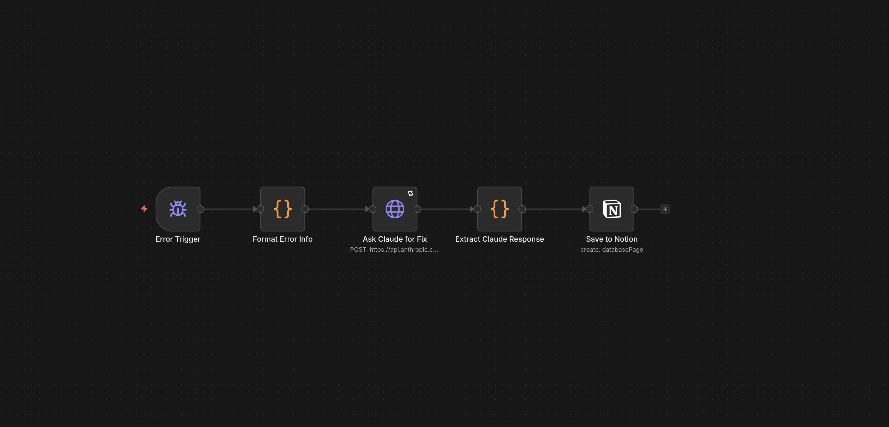

Self-healing: from an error to a note I can use.
In 2025, I built an n8n workflow that starts when another workflow reports an error. It prepares the error details, asks Claude to analyse the problem, and saves a cause analysis and a suggested fix prompt in Notion.
I call the project “Self-healing,” but the flow shown here stops at a reviewable Notion record. It does not show an automatic code change, deployment, or successful repair.


My workflow screenshot. Open at full size to inspect the five connected steps.
01 / Industries
Understand the work around the error.
This is an automation-support project. The people using it are those building and maintaining n8n workflows. n8n coordinates the process, Anthropic’s Claude supplies the AI analysis, and Notion stores the output for review.
The question is practical: when a workflow fails, how can I avoid starting the same investigation from scratch? The costs are the time spent reviewing errors, the AI request, and running the workflow. I have not calculated a financial return.
Understanding who uses the output matters because a useful error note needs enough context for someone to inspect and act on it. My research-to-content workflow is a related example of a process that can need this kind of follow-up.
02 / Finance
Give the work a clear objective.
The goal was to turn an error into a structured starting point for troubleshooting: what may have caused it and a prompt I can use to work on a fix. This project does not include a financial model.
I chose an error-triggered flow so the analysis could start from the reported problem. The sequence is error details, AI analysis, response extraction, then a saved note. To assess the value, I would compare the same errors handled manually and through the workflow, including review time and any wrong suggestions.
This is the same principle I use in the liquidity model: define the question I can actually answer before claiming a result.
03 / Data
Keep the error and the explanation separate.
The screenshot shows a formatting step before the request to Claude and an extraction step before Notion. The input is the error information; the output is an AI-written explanation and suggested prompt. I keep that distinction clear: a suggested cause is not a verified cause.
Before relying on a note, I need to compare it with the original error and inspect the affected step. Credentials and private payloads should be removed from material sent for analysis. The exact field mapping, saved Notion records, and execution logs have not been provided for this portfolio review.
The diagram shows the process, rather than an invented performance chart. Like the DCF Analyzer, the output is only useful when I can inspect the inputs and assumptions behind it.
04 / Automation
Capture the problem automatically. Review the fix myself.
- Error Trigger: start the follow-up when an n8n error is reported.
- Format Error Info: prepare the context for the AI request.
- Ask Claude for Fix: request an explanation and a suggested way to address the error.
- Extract Claude Response: prepare the returned content for the next step.
- Save to Notion: keep the cause analysis and fix prompt in a record I can review.
The next step is mine: check the suggestion, test a change, and see whether the error is resolved. Those repair and retest steps are outside the five-node flow shown here. The current workflow has not been rerun as part of this portfolio update.
Saving the analysis gives me something to return to when a similar problem occurs. I want to build on that by recording which suggestions worked and which did not.
05 / What I learnt from it
What I can show, and what I still need to measure.
| Measure | Evidence | What it means |
|---|---|---|
| Workflow scope | 5 connected nodes, shown in the screenshot | A documented path from error trigger to Notion output. |
| Output destination | 1 Notion save step | The workflow is designed to retain the analysis for review. |
| Automatic repair steps shown | 0 | The current evidence supports error analysis and a suggested prompt, not autonomous recovery. |
| Time saved / resolution rate | Not measured in the supplied evidence | No percentage improvement or time saving claimed. |
The five steps document the project’s scope; they are not proof of better speed or accuracy. To measure that, I would test the same error cases with and without the workflow, record total time including corrections, and count how many fixes pass a retest. I would also record AI request cost and failed runs.